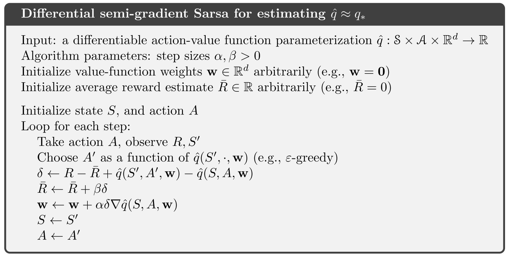
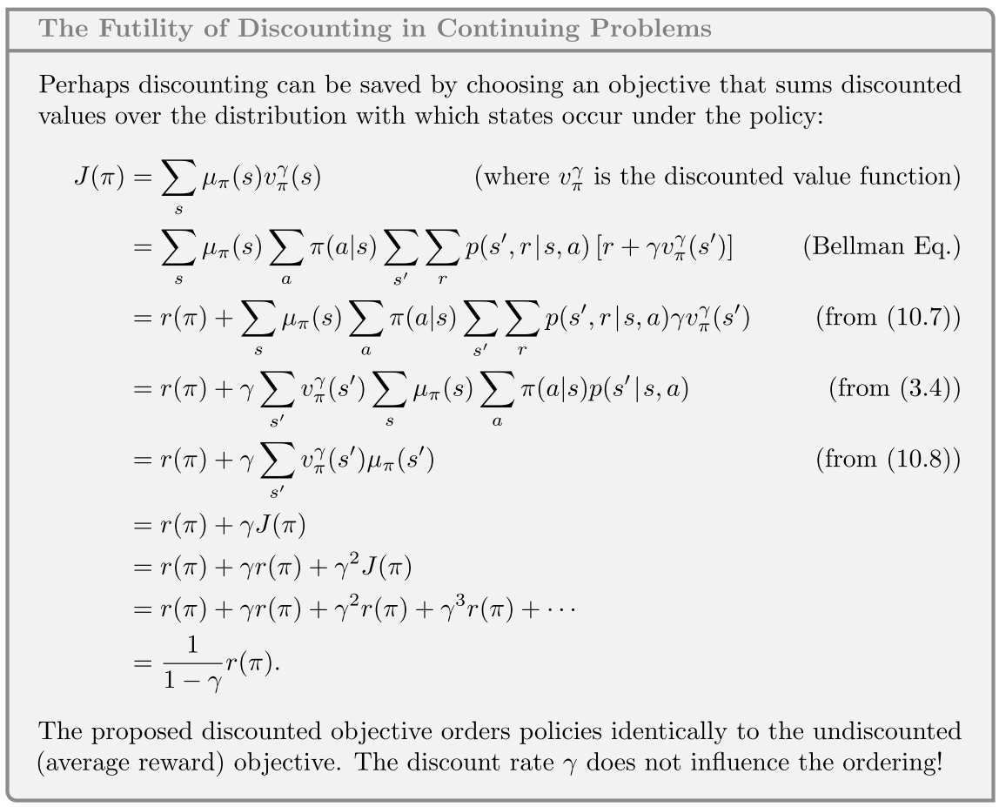

强化学习导论（十）- 在线策略的近似控制¶
第九章是在讲 prediction 问题，也就是如何对 value function 估值，这一章主要在其基础上关注 control 问题，也就是结合了 policy improvement 和 action select 的问题。
10.1 Episode Semi-gradient Control¶
这一节对 Q 函数进行估计：\hat{q}\approx q_\pi ，同样也是关于权向量 \mathbf{w} 的参数化函数，此时用于训练的样本由前一节的 S_t\mapsto U_t 变为 S_t,A_t\mapsto U_t 。
对于 one-step sarsa，梯度更新式为：
为了构成 control 问题，需要将以下几步结合起来：
- action-value prediction
- policy improvement
- action selection

10.2 n-step Semi-gradient Sarsa¶
令 U_t=G_{t:t+n} ，即为 n-step semi-gradient sarsa 算法，其中
更新式为

10.3 Average Reward: A New Problem Setting for Continuing Tasks¶
为满足『有限马尔可夫决策过程（MDP）』中的『有限』这一条件，我们之前是采用了 episodic setting（片段式） 以及 discounted setting（带削减系数） 两种方案，这里再介绍一种新的方案—— average reward setting 。
- 与 discounted setting 类似，average reward setting 也是不停止地与环境交互，用于没有开始、终止状态的连续型问题。
- 与 discounted setting 不同，average reward setting 没有削减系数，对任何时刻 reward 的重视程度一致。
在 average reward setting 中，策略 \pi 的好坏程度由 reward 的平均情况决定（而不是之前的总期望收益）：
其中 \mu_\pi(s)\doteq\lim\limits_{t\to\infty}\mathrm{Pr}\{S_t=s|A_{0:t-1}\sim\pi\} 为稳态分布，并且假定对于任意策略 \pi 都有 \mu_\pi 存在。称这个性质为『遍历性（ergodicity）』。
补充：上式第 1 行到第 2 行其实用的是数学分析里的一个性质：
\lim_{n\to \infty}a_n= a \Rightarrow \lim_{n\to\infty}\frac{a_1+a_2+\ldots + a_n}{n}=a
遍历性意味着 MDP 的开始位置以及任何早期决策带来的影响都只是暂时性的，长期而言，期望收益仅取决于策略和状态转移概率。
\mu_\pi 有个特点，根据策略 \pi 执行某个 action 所进入的新状态仍为同一分布：
在 average reward setting 中，return 的定义为
称这种 return 为 differential return，对应的 value function 为 differential value function 。
同样可定义差值形式的 TD error：

10.4 Deprecating the Discounted Setting¶
在本章背景下，原先的 discounted setting 存在一些问题（下面会讲），所以需要用 average reward setting 来取代 discounted setting 。
假设有一段没有起始点和终点的 episode ，下面证明两种方案的评价值是成正比的：

可以看出，在 on-policy 分布下，J(\pi) 和 r(\pi) 成正比关系，然而通过 r(\pi) 对策略优劣的排序结果是固定的，显然 J(\pi) 选出的策略顺序也相同，这说明削减系数 \gamma 对于决策选择行动没有实质性的影响，discounted setting 在这时便失去了一些使用价值，所以需要做出一些改变。
10.5 n-step Differential Semi-gradient Sarsa¶
在 average reward setting 下，可定义 n-step TD return 为：
同时也有 n-step TD error ：